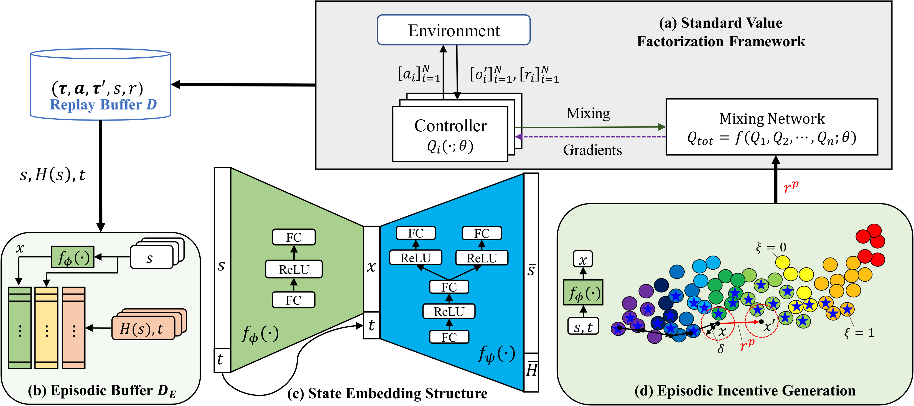
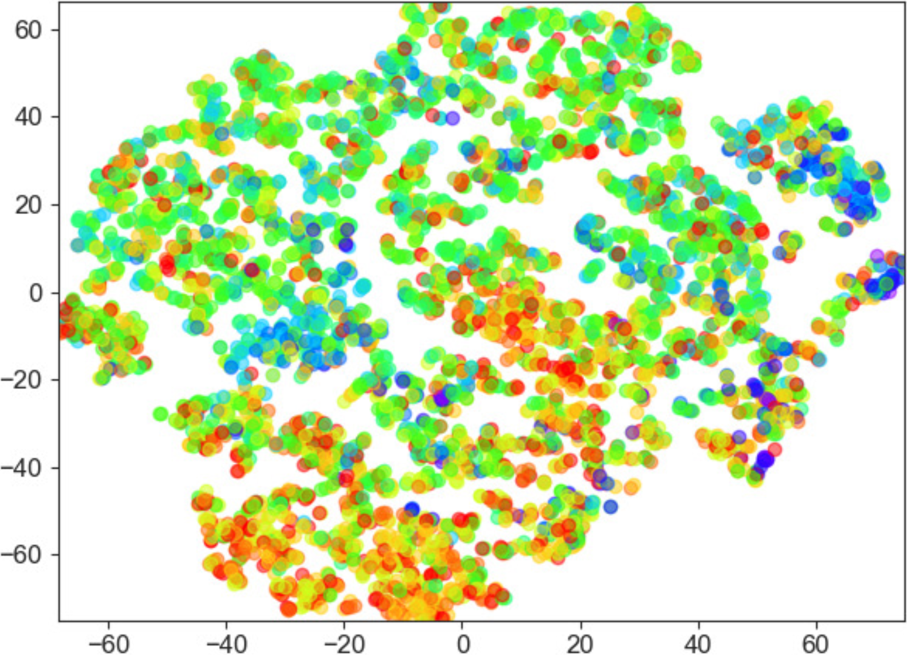
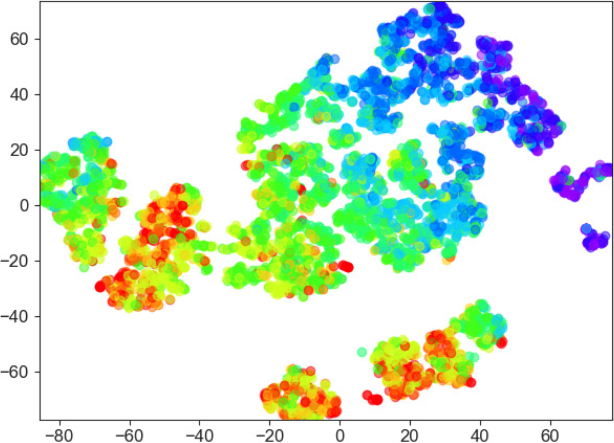
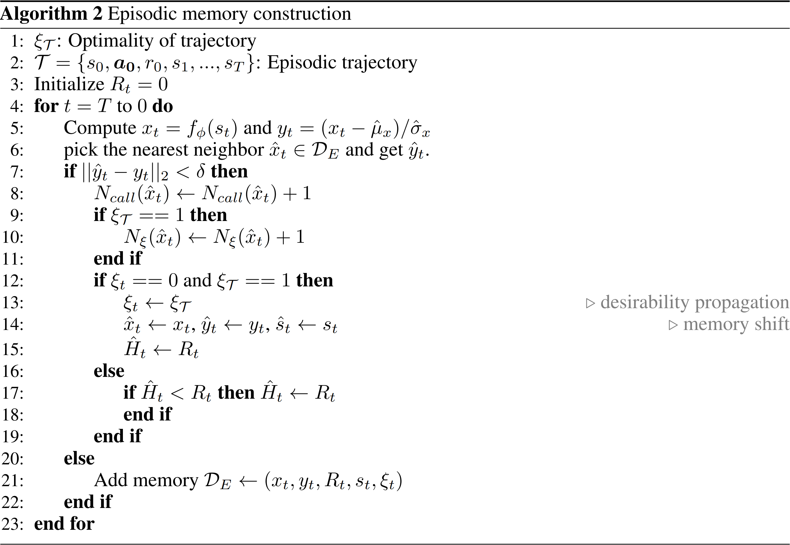
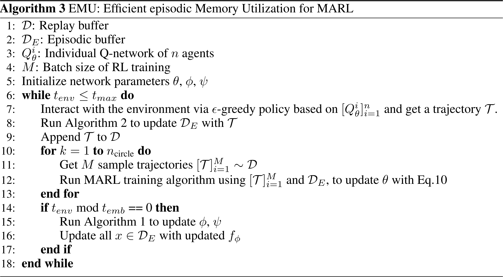

EMU

State Embedding
Conventional episodic control methods adopt Gaussian random projection to embed states for memory retrieval
x t = W s t ⇒ R k = R k × d ⋅ R d W i j ∼ N ( 0 , 1 k ) x_{t} = W s_{t} \Rightarrow \mathbb{R}^{k} = \mathbb{R}^{k \times d} \cdot \mathbb{R}^{d} \qquad W_{ij} \sim \mathcal{N} \left( 0,\ \frac{1}{k} \right)
x t = W s t ⇒ R k = R k × d ⋅ R d W i j ∼ N ( 0 , k 1 )
Despite preserving the distance relationship in raw state space, such random projection hardly has a semantic meaning
Random Projection
AutoEncoder
 
Hence, EMU constructs a deterministic conditional autoencoder ⟨ f ϕ , f ψ ⟩ \langle f_{\phi},\ f_{\psi} \rangle ⟨ f ϕ , f ψ ⟩
L ( ϕ , ψ ) = [ H ( s t ) − f ψ H ( x t ∣ t ) ] 2 + λ rcon ∥ s t − f ψ s ( x t ∣ t ) ∥ 2 2 x t = f ϕ ( s t ∣ t ) \mathcal{L}(\phi,\ \psi) = \Big[ H(s_{t}) - f_{\psi}^{H}(x_{t} \mid t) \Big]^{2} + \lambda_{\text{rcon}} \Big\| s_{t} - f_{\psi}^{s}(x_{t} \mid t) \Big\|_{2}^{2} \qquad x_{t} = f_{\phi}(s_{t} \mid t)
L ( ϕ , ψ ) = [ H ( s t ) − f ψ H ( x t ∣ t ) ] 2 + λ rcon ∥ ∥ ∥ ∥ s t − f ψ s ( x t ∣ t ) ∥ ∥ ∥ ∥ 2 2 x t = f ϕ ( s t ∣ t )
where H ( ⋅ ) H(\cdot) H ( ⋅ ) s t s_{t} s t t t t
H ( s t ) = { max { H ( s ^ ) , R t } ∥ f ϕ ( s ^ ) − f ϕ ( s t ) ∥ 2 < δ R t ∥ f ϕ ( s ^ ) − f ϕ ( s t ) ∥ 2 ≥ δ s ^ = arg min s ∈ D E ∥ f ϕ ( s ^ ) − f ϕ ( s t ) ∥ 2 H(s_{t}) = \left\{ \begin{matrix}
\max \{ H(\hat{s}),\ R_{t} \} & \| f_{\phi}(\hat{s}) - f_{\phi}(s_{t}) \|_{2} < \delta \\[5mm]
R_{t} & \| f_{\phi}(\hat{s}) - f_{\phi}(s_{t}) \|_{2} \ge \delta
\end{matrix} \right. \qquad \hat{s} = \argmin_{s \in \mathcal{D}_{E}} \| f_{\phi}(\hat{s}) - f_{\phi}(s_{t}) \|_{2}
H ( s t ) = ⎩ ⎪ ⎨ ⎪ ⎧ max { H ( s ^ ) , R t } R t ∥ f ϕ ( s ^ ) − f ϕ ( s t ) ∥ 2 < δ ∥ f ϕ ( s ^ ) − f ϕ ( s t ) ∥ 2 ≥ δ s ^ = s ∈ D E a r g m i n ∥ f ϕ ( s ^ ) − f ϕ ( s t ) ∥ 2
The episodic memory can be viewed as a trivial method to estimate optimal value function V ⋆ ( s ) V^{\star}(s) V ⋆ ( s )

Episodic Incentive
Combined with the vanilla TD error, the episodic memory can be uiltized to expedite the convergence of learning process
L EC ( θ ) = [ r + γ max a ′ Q θ − tot ( s ′ , a ′ ) − Q θ tot ( s , a ) ] 2 + λ [ r + γ H ( s ′ ) − Q θ tot ( s , a ) ] 2 \mathcal{L}^{\text{EC}}(\theta) = \Big[ r + \gamma \max_{a'} Q_{\theta^{-}}^{\text{tot}}(s',\ a') - Q_{\theta}^{\text{tot}}(s,\ a) \Big]^{2} + \lambda \Big[ r + \gamma H(s') - Q_{\theta}^{\text{tot}}(s,\ a) \Big]^{2}
L EC ( θ ) = [ r + γ a ′ max Q θ − tot ( s ′ , a ′ ) − Q θ tot ( s , a ) ] 2 + λ [ r + γ H ( s ′ ) − Q θ tot ( s , a ) ] 2
From the perspective of parameter gradients, the loss function above is equivalent to add an additional reward r EC r^{\text{EC}} r EC
L ( θ ) = [ r + λ sg ( r + γ H ( s ′ ) − Q θ tot ( s , a ) ) ⏟ r EC + γ max a ′ Q θ − tot ( s , a ) − Q θ tot ( s , a ) ] 2 \mathcal{L}(\theta) = \Big[ r + \underset{r^{\text{EC}}}{\underbrace{\lambda \operatorname{sg} \Big( r + \gamma H(s') - Q_{\theta}^{\text{tot}}(s,\ a) \Big)}} + \gamma \max_{a'} Q_{\theta^{-}}^{\text{tot}}(s,\ a) - Q_{\theta}^{\text{tot}}(s,\ a) \Big]^{2}
L ( θ ) = [ r + r EC λ s g ( r + γ H ( s ′ ) − Q θ tot ( s , a ) ) + γ a ′ max Q θ − tot ( s , a ) − Q θ tot ( s , a ) ] 2
However, the naive usage of r EC r^{\text{EC}} r EC
r p = γ ξ π ( s ′ ) [ H ( s ′ ) − max a ′ Q θ − tot ( s ′ , a ′ ) ] ≈ γ N ξ ( s ′ ) N call ( s ′ ) [ H ( s ′ ) − max a ′ Q θ − tot ( s ′ , a ′ ) ] r^{p} = \gamma \xi_{\pi}(s') \Big[ H(s') - \max_{a'} Q_{\theta^{-}}^{\text{tot}}(s',\ a') \Big] \approx \gamma \frac{N_{\xi}(s')}{N_{\text{call}}(s')} \Big[ H(s') - \max_{a'} Q_{\theta^{-}}^{\text{tot}}(s',\ a') \Big]
r p = γ ξ π ( s ′ ) [ H ( s ′ ) − a ′ max Q θ − tot ( s ′ , a ′ ) ] ≈ γ N call ( s ′ ) N ξ ( s ′ ) [ H ( s ′ ) − a ′ max Q θ − tot ( s ′ , a ′ ) ]
The ξ π ( s ′ ) ∈ [ 0 , 1 ] \xi_{\pi}(s') \in [0,\ 1] ξ π ( s ′ ) ∈ [ 0 , 1 ] s ′ s' s ′ π \pi π N call ( s ′ ) N_{\text{call}}(s') N call ( s ′ ) N ξ ( s ′ ) N_{\xi}(s') N ξ ( s ′ )

As the policy converges to optimal policy, the loss function with the episodic incentive converges to optimal TD error
L p ( θ ) = [ r + γ ξ π ( s ′ ) ⏟ → 1 [ H ( s ′ ) ⏟ → V ⋆ ( s ′ ) − max a ′ Q θ − tot ( s ′ , a ′ ) ] + γ max a ′ Q θ − tot ( s ′ , a ′ ) − Q θ tot ( s , a ) ] 2 ⇐ π → π ⋆ → [ r + γ V ⋆ ( s ′ ) − γ max a ′ Q θ − tot ( s ′ , a ′ ) + γ max a ′ Q θ − tot ( s ′ , a ′ ) − Q θ tot ( s , a ) ] 2 ≜ L ⋆ ( θ ) \begin{aligned}
\mathcal{L}^{p}(\theta) &= \Big[ r + \gamma \underset{\to 1}{\underbrace{\xi_{\pi}(s')}} \Big[ \underset{\to V^{\star}(s')}{\underbrace{H(s')}} - \max_{a'} Q_{\theta^{-}}^{\text{tot}}(s',\ a') \Big] + \gamma \max_{a'} Q_{\theta^{-}}^{\text{tot}}(s',\ a') - Q_{\theta}^{\text{tot}}(s,\ a) \Big]^{2} \Leftarrow \pi \to \pi^{\star} \\[5mm]
&\to \Big[ r + \gamma V^{\star}(s') - \cancel{\gamma \max_{a'} Q_{\theta^{-}}^{\text{tot}}(s',\ a')} + \cancel{\gamma \max_{a'} Q_{\theta^{-}}^{\text{tot}}(s',\ a')} - Q_{\theta}^{\text{tot}}(s,\ a) \Big]^{2} \triangleq \mathcal{L}^{\star}(\theta)
\end{aligned}
L p ( θ ) = [ r + γ → 1 ξ π ( s ′ ) [ → V ⋆ ( s ′ ) H ( s ′ ) − a ′ max Q θ − tot ( s ′ , a ′ ) ] + γ a ′ max Q θ − tot ( s ′ , a ′ ) − Q θ tot ( s , a ) ] 2 ⇐ π → π ⋆ → [ r + γ V ⋆ ( s ′ ) − γ a ′ max Q θ − tot ( s ′ , a ′ ) + γ a ′ max Q θ − tot ( s ′ , a ′ ) − Q θ tot ( s , a ) ] 2 ≜ L ⋆ ( θ )